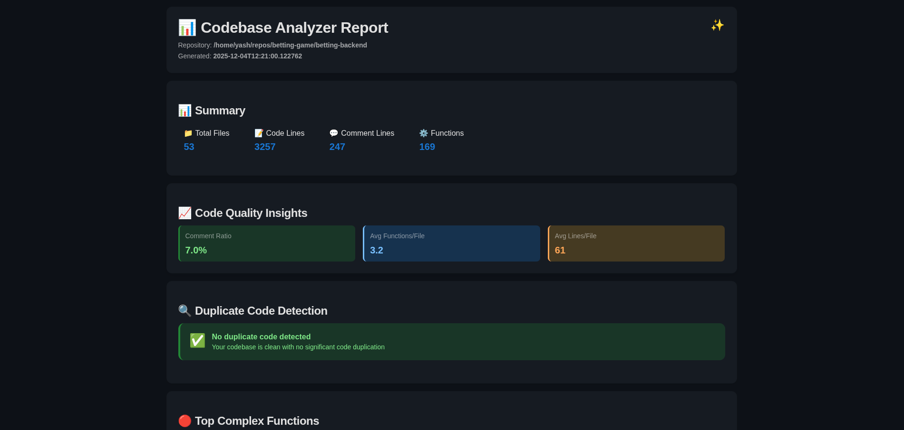

PyDuplicate — Duplicate & Complexity Analyzer
Open-source analyzer that surfaces duplicated code, complex functions, and even near-duplicate assets, shipping everything as a single interactive HTML report. (Dec 2025)
Features
- Detects function- and file-level duplication across a repository.
- Computes cyclomatic complexity to highlight risky hotspots.
- Uses MinHash + Locality Sensitive Hashing to find fuzzy duplicates.
- Renders all results into a responsive HTML report with collapsible sections and badges.
How it works
PyDuplicate walks the target project, extracts code metrics via radon, and builds MinHash signatures
for code and assets using datasketch. Candidate duplicates are grouped via Locality Sensitive Hashing,
scored by similarity and complexity, and then rendered using a Jinja2 HTML template so you can explore duplication
and hotspots from a browser.
Gallery



Project: py-duplicate-finder • Open source on GitHub • Built for codebase audits, refactors, and engineering reports.